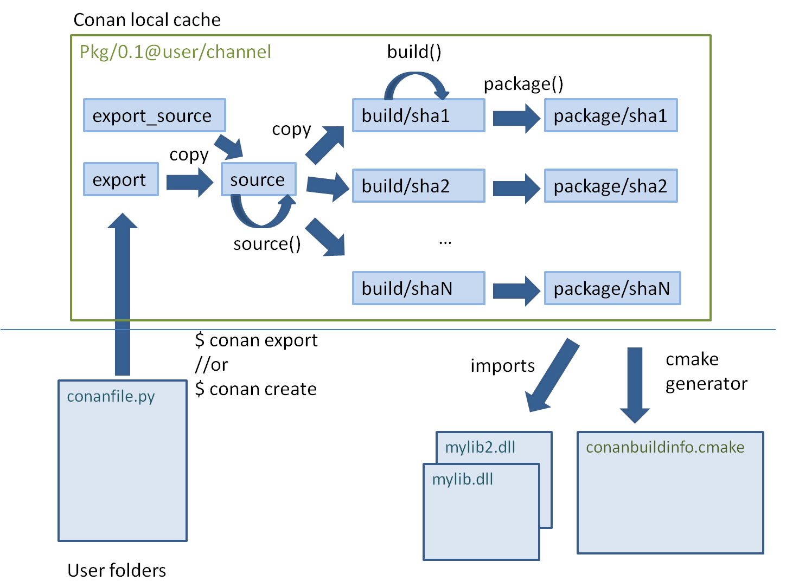

Understanding Packaging¶
Creating and Testing Packages Manually¶
The previous create approach using test_package subfolder, is not strictly necessary, though very strongly recommended. If we didn’t want to use the test_package functionality, we could just write our recipe ourselves or use the conan new command without the -t. command line argument.
$ mkdir mypkg && cd mypkg
$ conan new Hello/0.1
This will create just the conanfile.py recipe file. Now we can create our package:
$ conan create . demo/testing
This is equivalent to:
$ conan export . demo/testing
$ conan install Hello/0.1@demo/testing --build=Hello
Once the package is created, it can be consumed like any other package, by adding
Hello/0.1@demo/testing to a project conanfile.txt or conanfile.py requirements and running:
$ conan install .
# build and run your project to ensure the package works
Package Creation Process¶
It is very useful for package creators and Conan users in general to understand the flow for creating a package inside the conan local cache, and all about its layout.
Each package recipe contains five important folders in the local cache:
- export: The folder in which the package recipe is stored.
- export_source: The folder in which code copied with the recipe
exports_sourcesattribute is stored. - source: The folder in which the source code for building from sources is stored.
- build: The folder in which the actual compilation of sources is done. There will typically be one subfolder for each different binary configuration
- package: The folder in which the final package artifacts are stored. There will be one subfolder for each different binary configuration
The source and build folders only exist when the packages have been built from sources.
{kind=link}
The process starts when a package is “exported”, via the conan export command or more
typically, with the conan create command. The conanfile.py and files specified by the
exports_sources field are copied from the user space to the local cache.
The export and export_source files are copied to the source folder, and then the source()
method is executed (if it exists). Note that there is only one source folder for all the binary
packages. If when generating the code, there is source code that varies for the different
configurations, it cannot be generated using the source() method, but rather needs to be generated using the
build() method.
Then, for each different configuration of settings and options, a package ID will be computed in the
form of a SHA-1 hash for this configuration. Sources will be copied to the build/hashXXX folder,
and the build() method will be triggered.
After that, the package() method will be called to copy artifacts from the build/hashXXX
folder to the package/hashXXX folder.
Finally, the package_info() methods of all dependencies will be called and gathered so you can generate files for the consumer build system, as the conanbuildinfo.cmake for the cmake
generator. Also the imports feature will copy artifacts from the local cache into user space if
specified.
Any doubts? Please check out our FAQ section or write us.